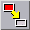
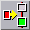
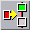

<!-- Documentation Xclamation (c)1994-2000 AXENE contact axene@axene.org>
<html>

<head>
<title>&quot;Text&quot; Horizontal Toolbar</title>
</head>

<body BGCOLOR="#FFFFFF" BACKGROUND="Images/back.gif" TEXT="#000000">

<p ALIGN="right">  </p>

<p><br>
<br>
The 'Text' toolbar provides tools such as text-sequencing operations for use with text
frames. When a text is larger than one frame can display, the remaining text may be shown
in another frame. This sort of text-sharing is called 'frame sequencing'. In a frame
sequence each frame constitutes a link; the order of these links determines how text will
flow. A sequence may contain frames from different pages, as long as they are from the
same document; empty frames may also be linked. <br>
<br>
</p>

<hr>

<p align="center"><br>
 <br>
<small><i>Screen shot: Text Toolbar </i></small></p>

<p><br>
</p>

<hr>

<p><br>
</p>

<h3>First Section of the Toolbar:</h3>

<ul>
  <li> <a NAME="editor_icon">This
    button opens the </a><a HREF="Box_Editor.html">text editor</a> in order <b>to create or
    modify text</b> in a frame. A single frame, empty or containing text, must be selected in
    the display screen of the active document in order to access this button. <br>
    &nbsp;</li>
</ul>

<p><br>
</p>

<h3>Second Section of the Toolbar:</h3>

<ul>
  <li> <a NAME="link_end_icon">The
    first button <b>adds a frame to the end of a sequence</b>. To do so, simply: <br>
    &nbsp;<ol>
      <li>Click on a sequence (or on an empty frame if the sequence will be without text). <br>
        &nbsp;</li>
      <li>Click on the empty frame to be added. <br>
        &nbsp;</li>
      <li>Repeat steps 1 and 2, or click on the right mouse button to end sequencing. <br>
        &nbsp;</li>
    </ol>
    <p>The cursor takes on the shape of a &quot;do not enter&quot; sign when pointed at
    inaccessible frames. The user may change pages between steps one and two; the added frame
    then becomes the last link in the chain.<br>
    <b>Example:</b> if <i>X</i> is the frame to be joined and <i>1-2-3-4</i> a sequence of
    four frames, clicking on <i>2</i> and then on <i>X</i> will result in the sequence <i>1-2-3-4-X</i>.
    </a><br>
    &nbsp;</p>
  </li>
  <li> <a
    NAME="link_beginning_icon">The second button <b>inserts a frame at the beginning of a
    sequence</b>. The mode of operation is otherwise the same as the preceding button, however
    the added frame becomes the first link of the chain.<br>
    <b>Example:</b> if <i>X</i> is the frame to be joined and <i>1-2-3-4</i> a sequence of
    four frames, clicking on <i>2</i> and then on <i>X</i> will result in the sequence <i>X-1-2-3-4</i>.
    </a><br>
    &nbsp;</li>
  <li> <a
    NAME="link_before_icon">The third button <b>inserts a frame into a sequence before a
    particular link</b>. To do so, simply: <br>
    &nbsp;<ol>
      <li>Click on the empty frame to be inserted. <br>
        &nbsp;</li>
      <li>Click on the sequenced frame in front of which the new frame is to be inserted. <br>
        &nbsp;</li>
      <li>Repeat steps one and two or click on the right mouse button to end sequencing. <br>
        &nbsp;</li>
    </ol>
    <p>The cursor takes on the shape of a &quot;do not enter&quot; sign when pointed at
    inaccessible frames. The user may change pages between steps one and two.<br>
    <b>Example:</b> if <i>X</i> is the frame to be joined and <i>1-2-3-4</i> a sequence of
    four frames, clicking on <i>X</i> and then on <i>2</i> will result in the sequence <i>1-X-2-3-4</i>.
    </a><br>
    &nbsp;</p>
  </li>
  <li> <a NAME="link_after_icon">The
    fourth button <b>inserts a frame into a sequence after a particular link</b>. The mode of
    operation is otherwise the same as the preceding button.<br>
    <b>Example:</b> if <i>X</i> is the frame to be joined and <i>1-2-3-4</i> a sequence of
    four frames, clicking on <i>X</i> and then on <i>2</i> will result in the sequence <i>1-2-X-3-4</i>.
    </a><br>
    &nbsp;</li>
  <li> <a NAME="unlink_icon">The last
    button <b>removes a linked frame from a sequence</b>. Only one frame may be selected when
    pushing this button; the frame removed from the sequence becomes an empty frame. </a><br>
    &nbsp;</li>
</ul>

<p><br>
</p>

<hr>

<p ALIGN="right"></p>
</body>
</html>
